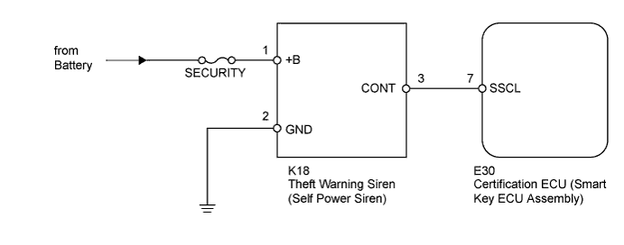
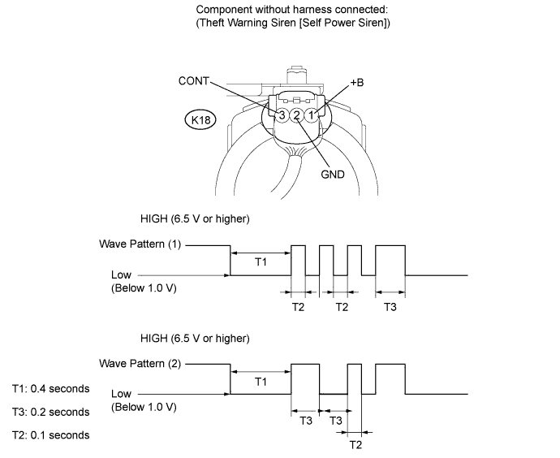
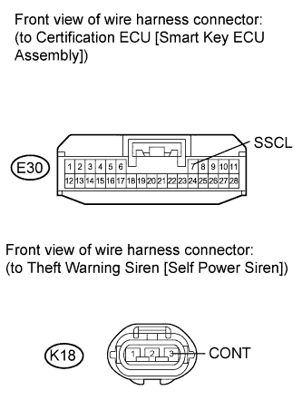
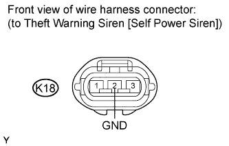

THEFT DETERRENT SYSTEM > Theft Warning Siren Circuit |

| 1.PERFORM ACTIVE TEST USING INTELLIGENT TESTER (THEFT WARNING SIREN [SELF POWER SIREN]) |
Operate the intelligent tester according to the steps on the display and select "Active Test".
| Tester Display | Test Part | Control Range | Diagnostic Note |
| Security Horn2 | Theft warning siren (self power siren) | ON / OFF | - |
|
| ||||
| OK | ||
| ||
| 2.CHECK THEFT WARNING SIREN (SELF POWER SIREN) |

Measure the voltage according to the value(s) in the table below.
| Tester Connection | Condition | Specified Condition |
| K18-1 (+B) - Body ground | Always | 11 to 14 V |
| K18-2 (GND) - Body ground | Always | Below 1 V |
| K18-3 (CONT) - Body ground | Switched from armed state or arming preparation state to disarmed state (1) | Wave pattern (1) shown in chart below |
| Switched from arming preparation state to armed state (2) | Wave pattern (2) shown in chart below | |
| Normal condition (Except (1) and (2)) | 1 to 2 V |
|
| ||||
| OK | ||
| ||
| 3.CHECK HARNESS AND CONNECTOR (CERTIFICATION ECU [SMART KEY ECU ASSEMBLY] - THEFT WARNING SIREN [SELF POWER SIREN]) |
 |
Disconnect the E30 ECU connector.
Disconnect the K18 siren connector.
Measure the resistance according to the value(s) in the table below.
| Tester Connection | Condition | Specified Condition |
| E30-7 (SSCL) - K18-3 (CONT) | Always | Below 1 Ω |
| E30-7 (SSCL) or K18-3 (CONT) - Body ground | Always | 10 kΩ or higher |
|
| ||||
| OK | |
| 4.CHECK HARNESS AND CONNECTOR (THEFT WARNING SIREN [SELF POWER SIREN] - BODY GROUND) |
 |
Disconnect the K18 siren connector.
Measure the resistance according to the value(s) in the table below.
| Tester Connection | Condition | Specified Condition |
| K18-2 (GND) - Body ground | Always | Below 1 Ω |
|
| ||||
| OK | ||
| ||